Chat with your notes or your entire vault, then build a living wiki inspired by Andrej Karpathy's LLM-wiki: indexes, concepts, tags, links, and schema. Turn your notes into quizzes and flashcards — all processed locally, with no ongoing cost after the one-time model download.
Every other local-AI plugin for Obsidian talks to something else — Ollama, LM Studio, a server on localhost:11434 that you install, configure and keep running. This one loads Gemma 4 E4B into Obsidian's own renderer through LiteRT-LM and WebGPU. There is no second app.
Ask about the note you have open and the answer is grounded in it. Follow-ups work: "so why does that taste bitter?" carries the previous exchange, because the panel is a conversation and not a list of unrelated questions.
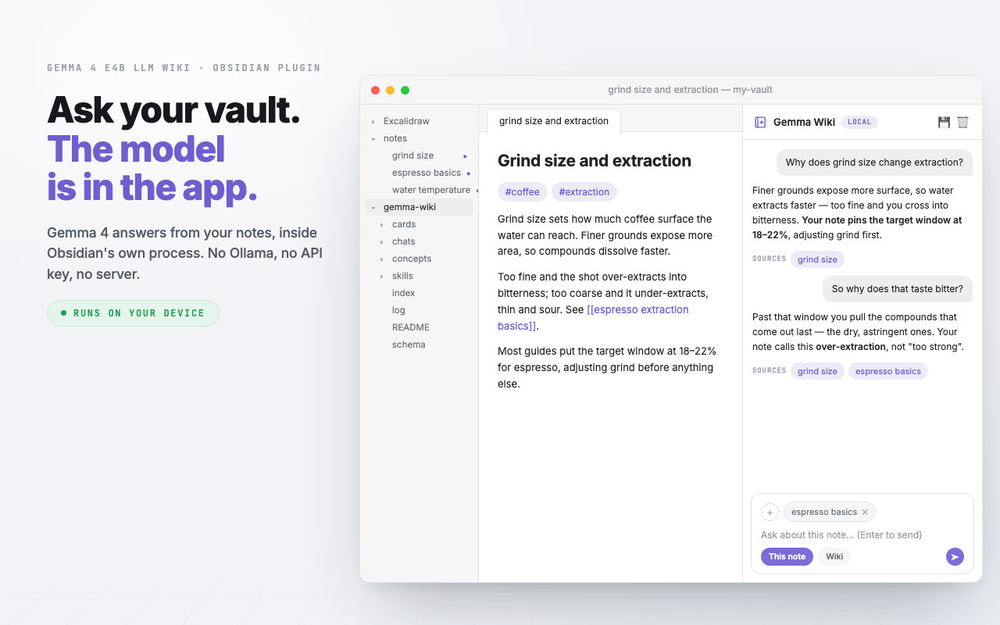
Command · Chat with active note (local Gemma)
Switch to Wiki mode and the question goes to everything you have filed. Retrieval is index-first: the plugin reads index.md — one line per page — decides which pages are worth opening, and opens only those.
Every answer ends with a Sources row listing exactly the pages it stood on. That row is written by the plugin, never by the model: citation is the one thing a small local model would get wrong without anyone noticing.
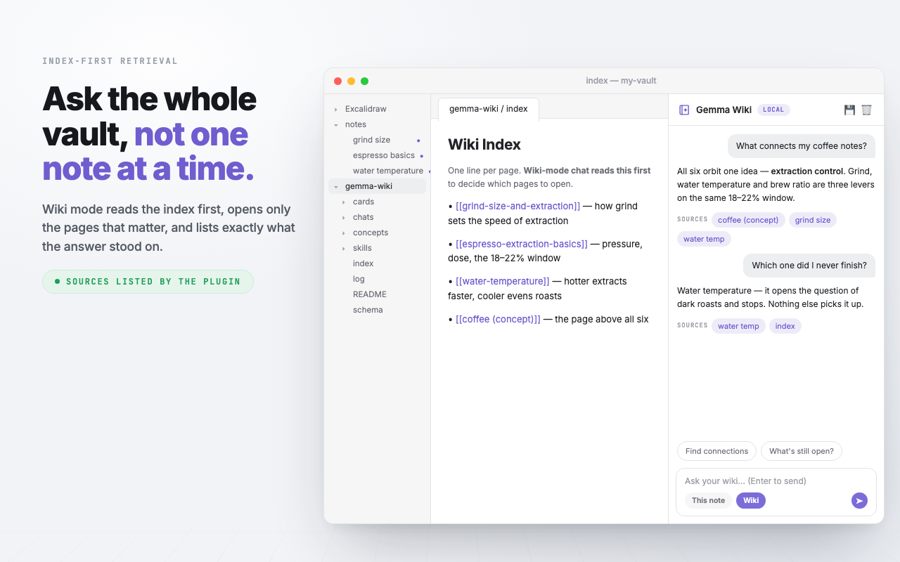
Mode · Wiki · reads index.md before deciding what to open
Karpathy's pattern separates raw sources (immutable), the wiki (owned by the model), and a schema file holding the conventions. This plugin implements that literally.
Your notes stay wherever you keep them and the model never edits, moves or renames them. Above them sits gemma-wiki/ — one card per note, concept pages across them, an index and an append-only log. And schema.md holds your tag vocabulary and a rejected list that outranks the model: a tag you deleted by hand never comes back.
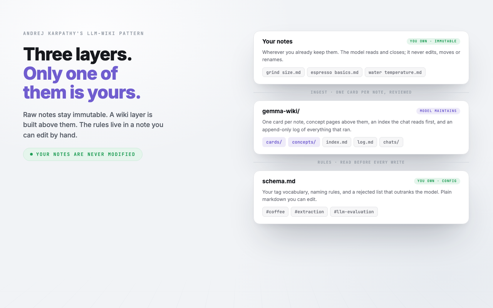
Layout · gemma-wiki/ — plain markdown, readable without this plugin
Two one-time downloads — the ~3 GB model and the WebAssembly runtime — both cached on your disk. After that, nothing. No telemetry, no analytics, no account, no API key, no tokens ever billed.
Your notes are never uploaded anywhere, because there is nowhere to upload them to. Privacy here is a property of the architecture rather than a promise in a policy.
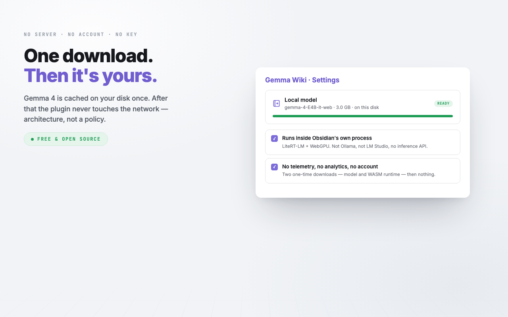
Command · Download model (one-time, ~3GB)
Ingesting a note produces one card: a summary, three tags, key points, the mentions it found, and the model's own confidence in its extraction. All of it is rendered in full, exactly as it will be saved, before a single byte lands.
This is the gate every write in the plugin passes through — ingest, concept pages, retagging, relinking, and the one command that rewrites a note of yours.
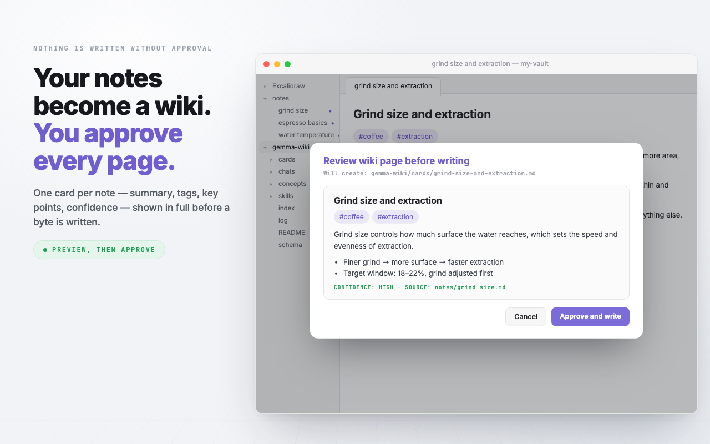
Command · Ingest this note into wiki (local Gemma)
Scan drafts a card for every new or changed note in the folders you named, then shows them in one list sorted lowest-confidence first — so the pages most in need of a human eye are the ones you read while you still have patience. Untick anything that should not have become a page.
Scope is opt-in: leave the folder list empty and scan refuses to run rather than sweeping your whole vault.
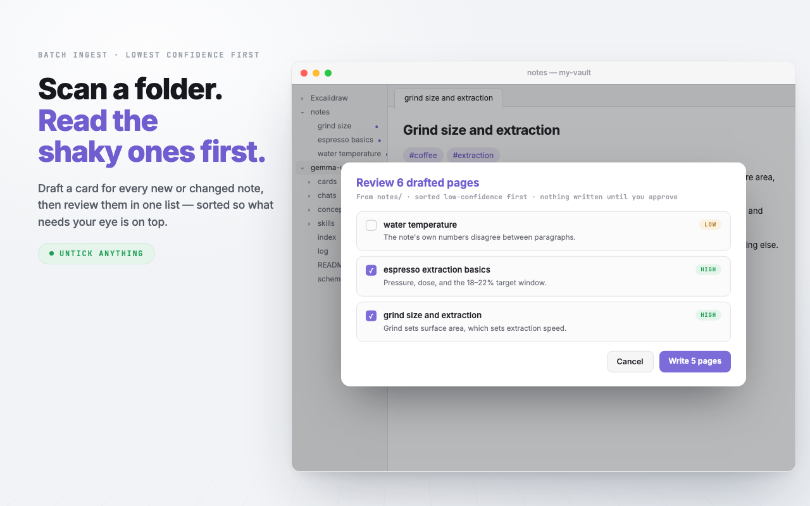
Command · Scan a folder into the wiki (batch, local Gemma)
Each card records source and source_hash in its frontmatter — the path of the note it summarises, and what that note looked like at the time.
That hash is what makes drift detectable. Edit the original note and the card is now describing something that changed; the review board says so. Fixing the note is the real fix — a card edited by hand is a patch the next re-ingest overwrites.
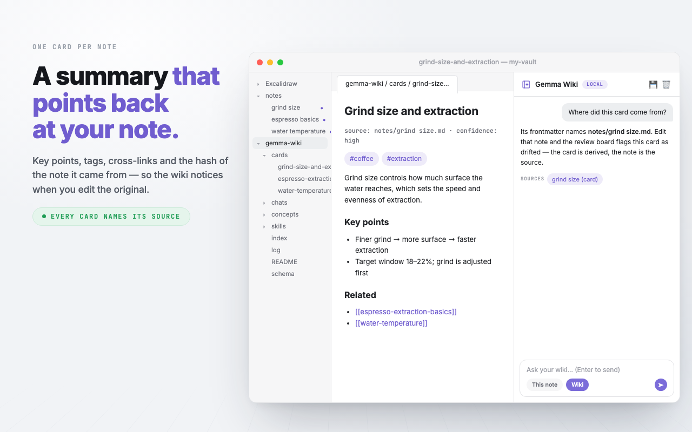
Folder · gemma-wiki/cards/ — one card per ingested note
Once two or more cards share a tag or a salient mention, the plugin can write the page that sits above them and links down into each one. Ingesting a new note ripples into it, and member lists heal in both directions.
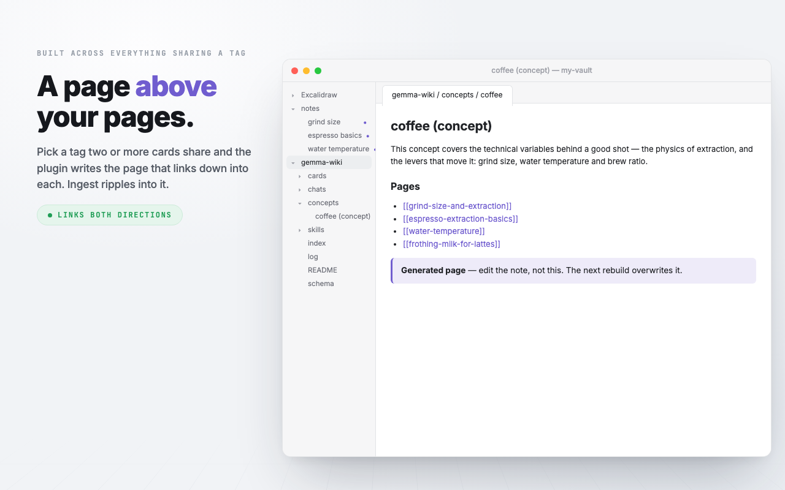
Command · Build a concept page from a tag or mention (local Gemma)
A wiki nobody reviews is the failure mode this is built against. Three ways a page goes bad, in one queue: low self-rated confidence, source drift caught by the hash, and plain staleness. Concept overviews are checked too.
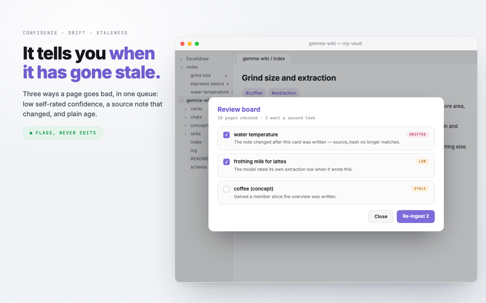
Command · Review board (low-confidence, drifted, and stale pages)
The provenance spot-check takes a page's key points back to the raw note and flags the ones no sentence supports — catching the case where ingest wrote something the note never said.
The contradiction sweep checks pairs of pages sharing a tag for claims that disagree, recently-changed pairs first. It quotes the reason and never edits: deciding which one was wrong is yours, and fixing the note behind it is the real repair.
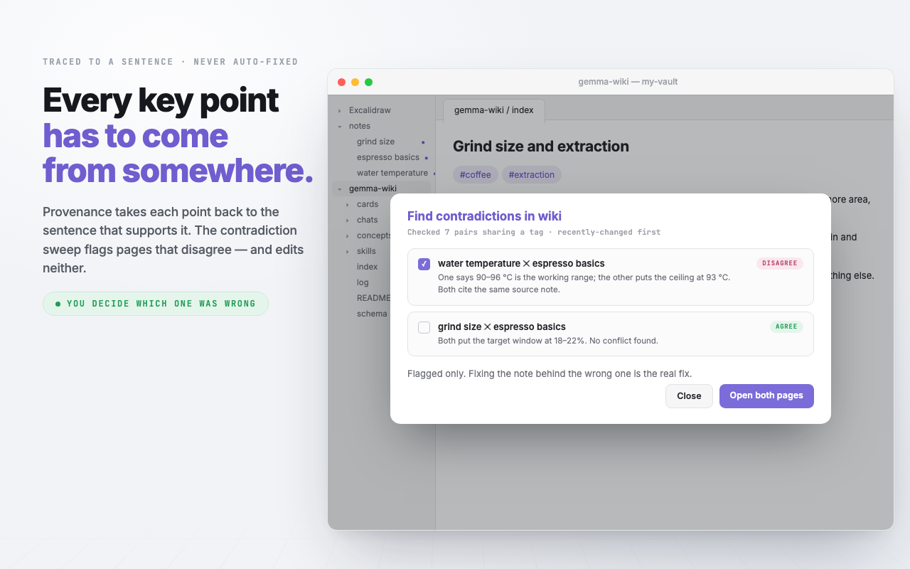
Commands · Provenance spot-check · Find contradictions in wiki
The check runs no model at all: orphan pages, index entries pointing at deleted files, pages missing from the index, and how far your tags have drifted from the vocabulary. Then four repairs are offered — make links mutual, drop dead entries, rebuild the vocabulary, apply it to existing pages — each behind its own preview, ticked where the check found something.
Availability is never tied to detection. A check good enough to pick a sensible default is not good enough to be the only way in.
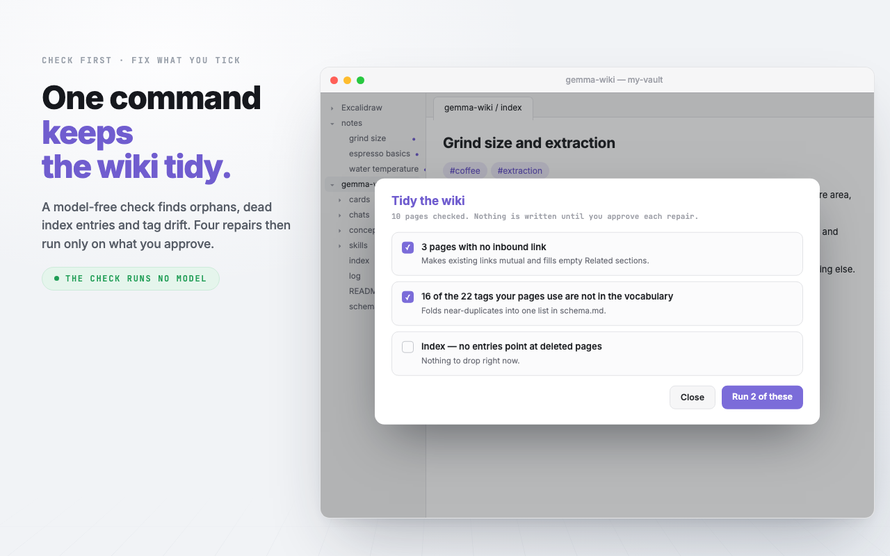
Command · Tidy the wiki (check, then fix what you approve)
The ⚡ menu holds canned single-task prompts against the open note — Quiz, Flashcards, Find gaps. Every answer still carries its Sources row.
And the menu is extensible by dropping a file: any markdown file in gemma-wiki/skills/ becomes a menu item, frontmatter for the name and icon, the body as the prompt. Add a file, get a command; delete it and it is gone.
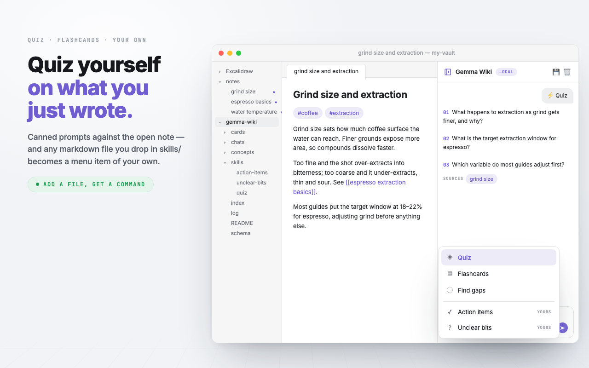
Panel · ⚡ skills · plus anything in gemma-wiki/skills/
Improve is the one command that rewrites a note you wrote. It touches structure, lists and obvious typos only — wording and voice preserved, never translated, code blocks and callouts untouched. A long note is rewritten in passes and stitched back together, and the whole result is shown before anything is written.
If you edit the note while it runs, it refuses rather than overwriting you.
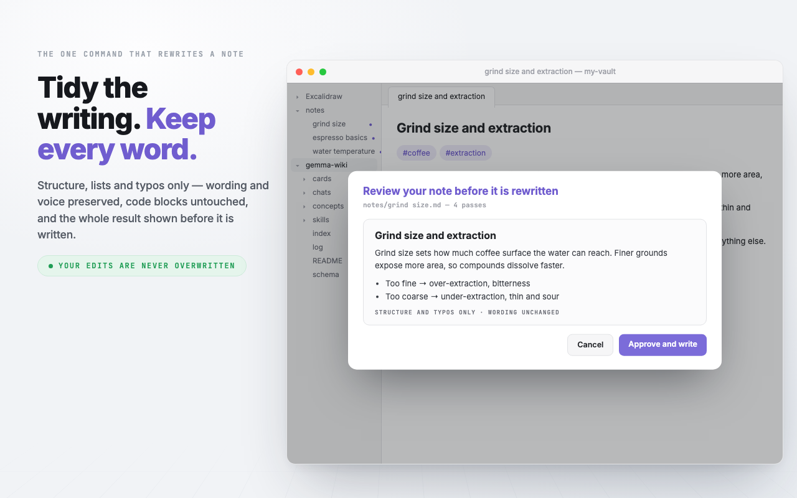
Command · Improve formatting of active note (local Gemma)
Save a thread and it lands in gemma-wiki/chats/, named after its first question, with each answer keeping the Sources it stood on. The folder has its own index listing everything you kept, newest first.
Nothing in it is retrieved, indexed, linted or scanned. A chat in the wiki index would be indistinguishable from a page — and an answer read back as material comes back months later cited to your own notes. An answer is output, never input. To make one count, put it in a note of your own and scan that, like anything else you wrote.
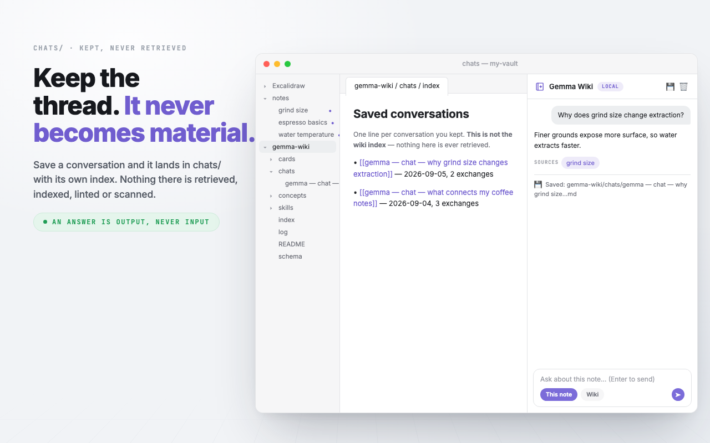
Panel · 💾 Save conversation · writes to gemma-wiki/chats/
The recording deck walks the same features as 23 stepped scenes, from first run to a maintained wiki — scripted mock-ups, arrow keys to advance.